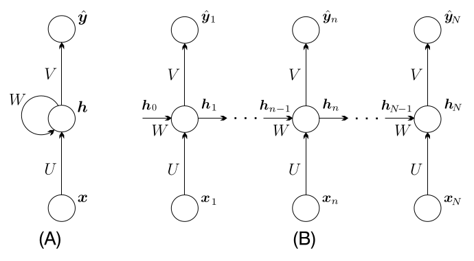
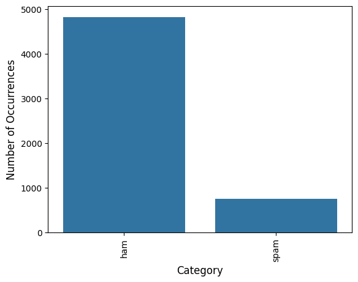
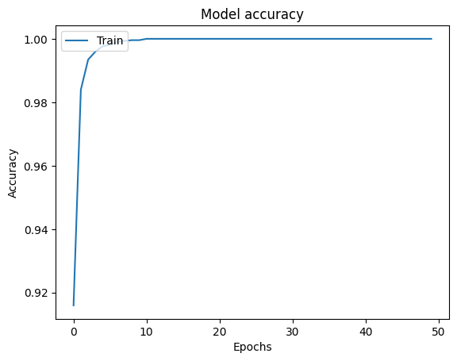
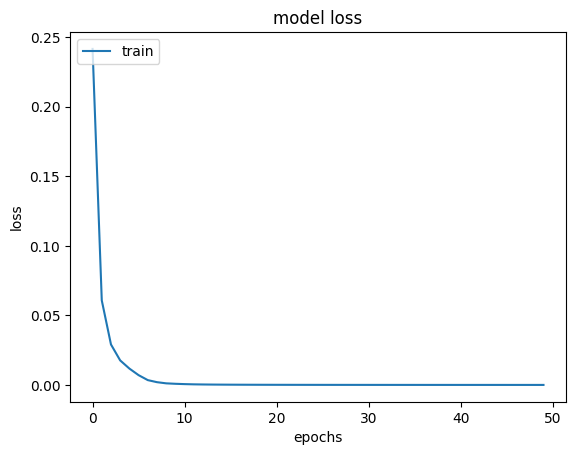
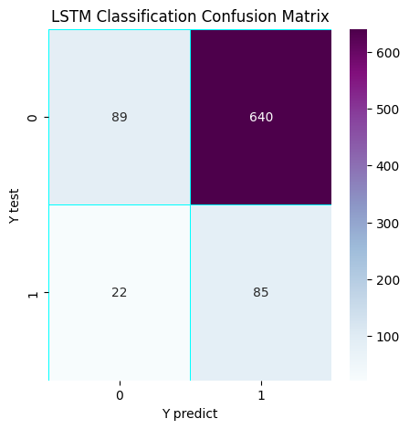
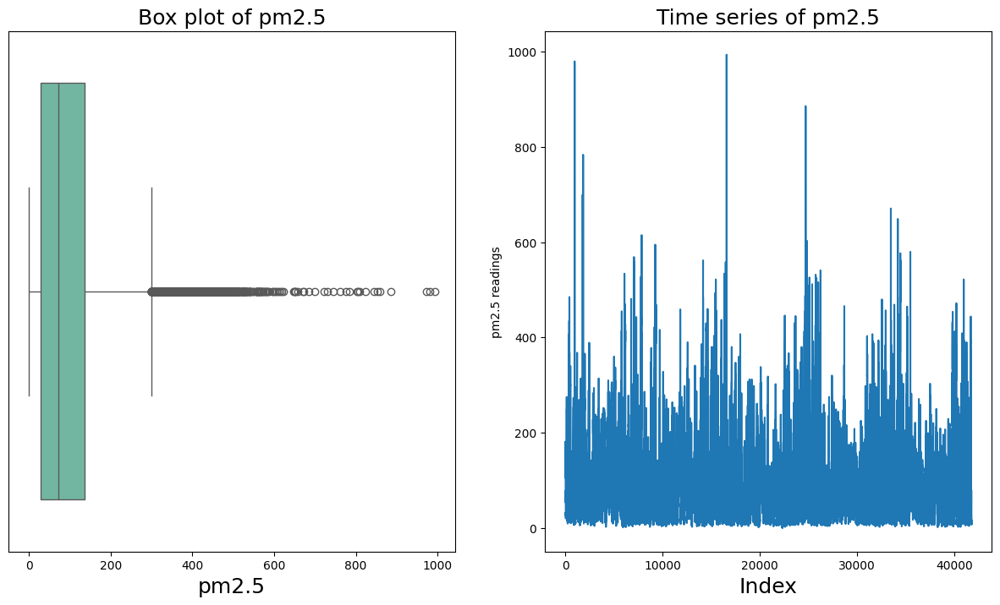
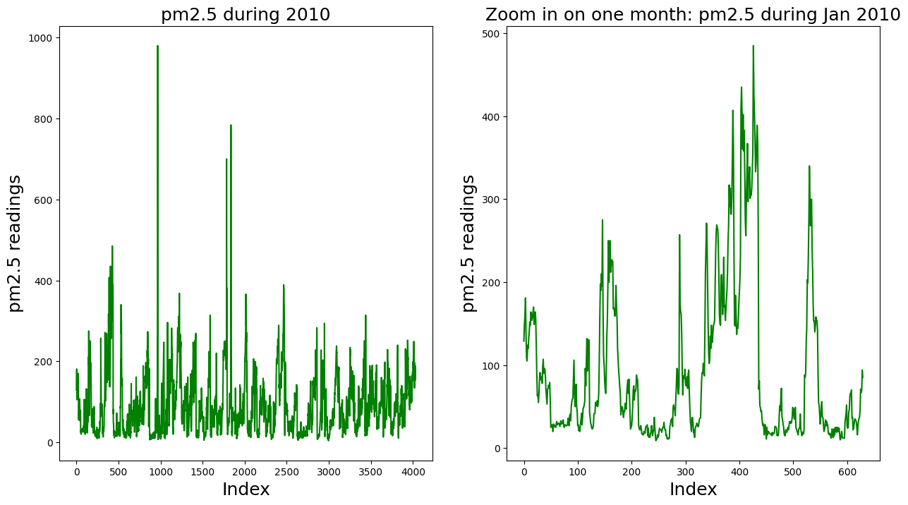
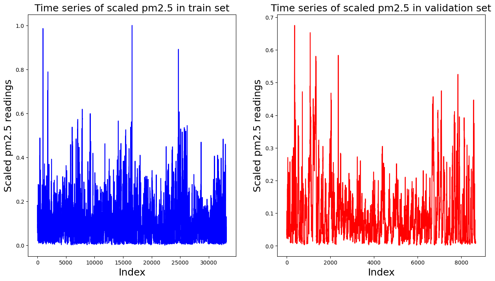
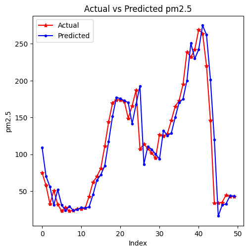

4. Recurrent Neural Networks#
Introducción
Recordemos de la sección anterior que en el corazón de las redes convolucionales se encuentra el concepto de peso compartido. Es decir, la misma matriz de filtro se desliza sobre una matriz de imágenes en lugar de dedicar un peso específico a cada píxel de la imagen. De este modo, una red neuronal puede escalarse fácilmente a imágenes de diferentes dimensiones.
Nuestro interés en esta sección se centra en el caso de los datos secuenciales. Es decir, los vectores de entrada no son independientes, sino que aparecen en secuencia. Además, el orden específico en que se producen encierra información importante. Por ejemplo, este tipo de secuencias se dan en el reconocimiento del habla y en el procesamiento del lenguaje, como la traducción automática, así como también el pronostico de series de tiempo financieras. Sin duda, la secuencia en la que se producen las palabras es de suma importancia.
El reparto de pesos mediante convoluciones también podría ser y ha sido utilizado para estos casos [Lang et al., 1990]. Tales redes se conocen como redes neuronales de retardo temporal. Sin embargo, deslizar un filtro a través del tiempo para formar convoluciones es una operación de naturaleza local. La salida es una función de las muestras de entrada dentro de una ventana temporal que abarca la longitud de la respuesta al impulso del filtro, que por razones prácticas no puede ser muy larga.
Redes Neuronales Recurrentes
Las variables que intervienen en una RNN son:
Vector de estado en el tiempo \(n\), denotado como \(\boldsymbol{h}_{n}\). El símbolo nos recuerda que \(\boldsymbol{h}\) es un vector de variables ocultas (capa oculta en la jerga de las redes neuronales); el vector de estado constituye la memoria del sistema,
Vector de entrada en el momento \(n\), denominado \(\boldsymbol{x}_{n}\),
Vector de salida en el momento \(n\), \(\hat{\boldsymbol{y}}_{n}\), y el vector de salida objetivo, \(\boldsymbol{y}_{n}\).
El modelo se describe mediante un conjunto de matrices y vectores de parámetros desconocidos, a saber, \(U, W, V , \boldsymbol{b}\) y \(\boldsymbol{c}\), que deben aprenderse durante el entrenamiento.
Las ecuaciones que describen un modelo RNN son
(4.1)#\[\begin{split} \begin{align*} \boldsymbol{h}_{n}&=f(U\boldsymbol{x}_{n}+W\boldsymbol{h}_{n-1}+\boldsymbol{b})\\ \hat{\boldsymbol{y}}_{n}&=g(V\boldsymbol{h}_{n}+\boldsymbol{c}). \end{align*} \end{split}\]donde las funciones no lineales \(f\) y \(g\)*** actúan elemento a elemento (element-wise)*** y se aplican individualmente a cada elemento de sus argumentos vectoriales.
En otras palabras, una vez que se ha observado un nuevo vector de entrada, se actualiza el vector de estado. Su nuevo valor depende de la información más reciente, transmitida por la entrada \(\boldsymbol{x}_{n}\) así como de la historia pasada, ya que ésta se ha acumulado en \(\boldsymbol{h}_{n-1}\). La salida depende del vector de estado actualizado, \(\boldsymbol{h}_{n}\). Es decir, depende de la “historia” hasta el instante actual \(n\), tal y como se expresa en \(\boldsymbol{h}_{n}\).
Las opciones típicas para \(f\) son la tangente hiperbólica, tanh, o las no linealidades ReLU. El valor inicial \(\boldsymbol{h}_{0}\) suele ser igual al vector cero. La no linealidad de salida, \(g\), se elige a menudo para ser la función softmax.
{kind=link}

Fig. 4.1 Arquitectura de una Red Neuronal Recurrente. Fuente [Theodoridis, 2020].#
De las ecuaciones anteriores se deduce que las matrices y vectores de parámetros se comparten en todos los instantes temporales. Durante el entrenamiento, se inicializan mediante números aleatorios. El modelo gráfico asociado con Eq. (4.1) se muestra en la Fig. 4.1A. En la Fig. 4.1B, el gráfico se despliega sobre los distintos instantes de tiempo para los que se dispone de observaciones. Por ejemplo, si la secuencia de interés es una frase de 10 palabras, entonces \(N\) se establece igual a 10, mientras que \(\boldsymbol{x}_{n}\) es el vector que codifica las respectivas palabras de entrada.
4.1. Backpropagation en tiempo#
El entrenamiento de las RNN sigue una lógica similar a la del algoritmo backpropagation para el entrenamiento de redes neuronales de avance. Después de todo, una RNN puede verse como una red feed-forward con \(N\) capas. La capa superior es la del instante de tiempo \(N\) y la primera capa corresponde al instante de tiempo \(n = 1\). Una diferencia radica en que las capas ocultas en una RNN también producen salidas, es decir, \(\hat{\boldsymbol{y}}_{n}\), y se alimentan directamente con entradas. Sin embargo, en lo que respecta al entrenamiento, estas diferencias no afectan al razonamiento principal.
El aprendizaje de las matrices y vectores de parámetros desconocidos se consigue mediante un esquema de gradiente descendente, de acuerdo con Eq. (2.3). Resulta que los gradientes requeridos de la función de coste, con respecto a los parámetros desconocidos, tienen lugar recursivamente, comenzando en el último instante de tiempo, \(N\) , y retrocediendo en el tiempo, \(n = N-1, N-2,\dots,1\). Esta es la razón por la que el algoritmo se conoce como bakpropagation a traves del tiempo (BPTT).
La función de coste es la suma a lo largo del tiempo, \(n\), de las correspondientes contribuciones a la función de pérdida, que dependen de los valores respectivos de \(\boldsymbol{h}_{n}, \boldsymbol{x}_{n}\), es decir,
Por ejemplo, para el caso de la función de pérdida de entropía cruzada,
\[ J_{n}(U, W, V, \boldsymbol{b}, \boldsymbol{c}):=-\sum_{k}y_{nk}\ln\hat{y}_{nk}, \]donde la suma es sobre la dimensionalidad de \(\boldsymbol{y}\), y
\[ \hat{\boldsymbol{y}}_{n}=g(\boldsymbol{h}_{n}, V, \boldsymbol{c})~\text{y}~\boldsymbol{h}_{n}=f(\boldsymbol{x}_{n}, \boldsymbol{h}_{n-1}, U, W, \boldsymbol{b}). \]
En el corazón del cálculo de los gradientes de la función de coste con respecto a las diversas matrices y vectores de parámetros se encuentra el cálculo de los gradientes de \(J\) con respecto a los vectores de estado, \(\boldsymbol{h}_{n}\). Una vez calculados estos últimos, el resto de los gradientes, con respecto a las matrices y vectores de parámetros desconocidos, es una tarea sencilla. Para ello, nótese que cada \(h_{n},~n=1, 2,\dots,N-1\), afecta a \(J\) de dos maneras:
Directamente, a traves de \(J_{n}\)
Indirectamente, a través de la cadena que impone la estructura RNN, es decir,
\[ \boldsymbol{h}_{n}\rightarrow\boldsymbol{h}_{n+1}\rightarrow\cdots\rightarrow\boldsymbol{h}_{N}. \]Es decir, \(\boldsymbol{h}_{n}\), además de \(J_{n}\), también afecta a todos los valores de coste posteriores, \(J_{n+1},\dots, J_{N}\). Nótese que, a traves de la cadena \(\boldsymbol{h}_{n+1}=f(\boldsymbol{x}_{n+1}, \boldsymbol{h}_{n}, U, W, \boldsymbol{b}).\)
Empleando la regla de la cadena para las derivadas, las dependencias anteriores conducen al siguiente cálculo recursivo:
(4.2)#\[ \frac{\partial J}{\partial\boldsymbol{h}_{n}}=\underbrace{{\left(\frac{\partial\boldsymbol{h}_{n+1}}{\partial\boldsymbol{h}_{n}}\right)^{T}}\frac{\partial J}{\partial\boldsymbol{h}_{n+1}}}_{\text{parte recursiva indirecta}}+\underbrace{\left(\frac{\partial\hat{\boldsymbol{y}}_{n}}{\partial\boldsymbol{h}_{n}}\right)^{T}\frac{\partial J}{\partial\hat{\boldsymbol{y}}_{n}}}_{\text{parte directa}}, \]donde, por definición, la derivada de un vector, digamos, \(\boldsymbol{y}\), con respecto a otro vector, digamos, \(\boldsymbol{x}\), se define como la matriz
\[ \left[\frac{\partial\boldsymbol{y}}{\partial\boldsymbol{x}}\right]_{ij}:=\frac{\partial y_{i}}{\partial x_{j}}. \]
Nótese que el gradiente de la función de coste, con respecto a los parámetros ocultos (vector de estado) en la capa “\(n\)”, se da como una función del gradiente respectivo en la capa anterior, es decir, con respecto al vector de estado en el tiempo \(n + 1\). Las dos pasadas requeridas por backpropagation en el tiempo se resumen a continuación.
Pasadas de Backpropagation en Tiempo
Paso hacia adelante:
Iniciando en \(n=1\) y utilizando las estimaciones actuales de las matrices y vectores de parámetros implicados, calcular en secuencia,
\[ (\boldsymbol{h}_{1}, \hat{\boldsymbol{y}}_{1})\rightarrow(\boldsymbol{h}_{2}, \hat{\boldsymbol{y}}_{2})\rightarrow\cdots\rightarrow(\boldsymbol{h}_{N}, \hat{\boldsymbol{y}}_{N}). \]Paso hacia atrás:
Empezando en \(n = N\), calcular en secuencia,
\[ \frac{\partial J}{\partial\boldsymbol{h}_{N}}\rightarrow\frac{\partial J}{\partial\boldsymbol{h}_{N-1}}\rightarrow\cdots\rightarrow\frac{\partial J}{\partial\boldsymbol{h}_{1}}. \]
Nótese que el cálculo del gradiente \(\partial J/\partial\boldsymbol{h}_{N}\) es sencillo, y solo involucra la parte directa en Eq. (4.2).
Para la implementación de la BPTT, se procede a
inicializar aleatoriamente las matrices y vectores desconocidos implicados,
calcular todos los gradientes requeridos, siguiendo los pasos indicados anteriormente, y
realizar las actualizaciones según el esquema de gradiente descendente.
Los pasos (2) y (3) se realizan de forma iterativa hasta que se cumple un criterio de convergencia, de forma análoga al algoritmo estándar de backpropagation.
4.2. Desvanecimiento y explosión de gradientes#
La tarea de desvanecimiento y explosión de gradientes se ha introducido y discutido en secciones anteriores, en el contexto del algoritmo de backpropagation. Los mismos problemas se presentan en el algoritmo BPTT, dado que, este último es una forma específica del concepto de backpropagation y, como se ha dicho, una RNN puede considerarse como una red multicapa, donde cada instante de tiempo corresponde a una capa diferente. De hecho en las RNN, el fenómeno de desvanecimiento/explosión de gradiente aparece de una forma bastante “agresiva”, teniendo en cuenta que \(N\) puede alcanzar valores grandes.
La naturaleza multiplicativa de la propagación de gradientes puede verse fácilmente en la Eq. (4.2). Para ayudar a comprender el concepto principal, simplifiquemos el escenario y supongamos que sólo interviene una variante de estado. Entonces los vectores de estado se convierten en escalares, \(h_{n}\) , y la matriz \(W\) en un escalar \(w\). Además, supongamos que las salidas también son escalares. Entonces la recursión en la Eq. (4.2) se simplifica como:
Suponiendo en la Eq. (4.1) que \(f\) es la función \(\tanh(\cdot)\) estándar, teniendo en cuenta que, \(\text{sech}^2(\cdot)=1-\tanh^2(\cdot)\) y \(|\tanh(\cdot)|<1\), sobre su dominio, se ve fácilmente que
Escribiendo la recursión para dos pasos sucesivos, repitiendo el proceso en Eq. (4.3), por ejemplo, para \(\partial h_{n+2}/\partial h_{n+1}\) obtenemos que,
No es difícil ver que la multiplicación de los términos menores que uno puede llevar a valores de desvanecimiento, sobre todo si tenemos en cuenta que, en la práctica, las secuencias pueden ser bastante grandes, por ejemplo, \(N = 100\). Por lo tanto para instantes de tiempo cercanos a \(n = 1\), la contribución al gradiente del primer término del lado derecho en la Eq. (4.4) implicará un gran número de productos de números menores que uno en magnitud. Por otra parte, el valor de \(w\) estará contribuyendo en \(w^{n}\) potencia. Por lo tanto, si su valor es mayor que uno, puede conducir a valores explosivos de los gradientes respectivos.
En varios casos, se puede truncar el algoritmo de backpropagation a unos pocos pasos de tiempo. Otra forma, es sustituir la no linealidad tanh por la ReLU. Para el caso del valor explosivo, se puede introducir una técnica que recorte los valores a un umbral predeterminado, una vez que los valores superen ese umbral. Sin embargo, otra técnica que suele emplearse en la práctica es sustituir la formulación RNN estándar descrita anteriormente por una estructura alternativa, que puede hacer mejor frente a estos fenómenos causados por la dependencia a largo plazo de la RNN.
Observation 4.1
RNN profundas: Además de la red RNN básica que comprende una sola capa de estados, se han propuesto extensiones que implican múltiples capas de estados, una encima de otra (ver [Pascanu et al., 2013]).RNN bidireccionales: Como su nombre indica, en las RNN bidireccionales hay dos variables de estado, es decir, una denotada como \(\overset{\rightarrow}{\boldsymbol{h}}\), que se propaga hacia adelante, y otra, \(\overset{\leftarrow}{\boldsymbol{h}}\), que se propaga hacia atrás. De este modo, las salidas dependen tanto del pasado como del futuro (ver [Graves et al., 2013]).
Ejemplo
Ejemplo de BPTT con dos secuencias de texto. Este ejemplo utiliza dos secuencias de texto (una positiva y una negativa) para demostrar cómo funciona el proceso de Backpropagation Through Time (BPTT) en una red recurrente. Además, mostramos la actualización de los pesos mediante gradiente descendente.
Paso 1: Definición de los datos y parámetros
Secuencias de Texto
Secuencia 1 (Positiva):
"I love this movie"Secuencia 2 (Negativa):
"This movie is terrible"
Embeddings de las Palabras
Cada palabra se representa por un vector embedding (
Word2Vec) de 3 dimensiones:"I"= \([0.1, 0.2, 0.1]\)"love"= \([0.4, 0.5, 0.6]\)"this"= \([0.3, 0.1, 0.3]\)"movie"= \([0.5, 0.1, -0.3]\)"is"= \([0.2, 0.3, 0.2]\)"terrible"= \([-0.5, -0.6, -0.7]\)
Etiquetas de Salida (Clases)
Secuencia 1: clase 1 (positiva)
Secuencia 2: clase 0 (negativa)
Definir los Datos y Parámetros Iniciales (tres filas en las matrices significa que hay tres unidades en la capa oculta)
Sesgos
Paso 2: Propagación hacia Adelante
Vamos a recalcular las salidas de los estados ocultos \(h_n\) y la salida final \(y_n\), incluyendo la función de activación en la salida (
softmax).Tiempo \(n = 1\) (
"I")Para la palabra
"I", \(x_1 = [0.1, 0.2, 0.1]\):
Calcular la propagación hacia adelante del estado oculto \(h_1\):
\[\begin{split} U \cdot x_1 = U \cdot [0.1, 0.2, 0.1]^\top = \begin{bmatrix} (0.1 \times 0.1) + (-0.2 \times 0.2) + (0.3 \times 0.1) \\ (0.4 \times 0.1) + (0.1 \times 0.2) + (-0.3 \times 0.1) \\ (0.3 \times 0.1) + (0.2 \times 0.2) + (-0.1 \times 0.1) \end{bmatrix} = \begin{bmatrix} 0.01 + (-0.04) + 0.03 \\ 0.04 + 0.02 + (-0.03) \\ 0.03 + 0.04 + (-0.01) \end{bmatrix} = \begin{bmatrix} 0.02 \\ 0.05 \\ 0.07 \end{bmatrix} \end{split}\]Como \(h_0 = [0, 0, 0]\):
\[ h_1 = \tanh([0.02, 0.05, 0.07] + b) = \tanh([0.12, 0.15, 0.17]) \approx [0.119, 0.149, 0.168] \]Tiempo \(n = 2\) (
"love")Para la palabra
"love", \(x_2 = [0.4, 0.5, 0.6]\):
Calcular la propagación hacia adelante del estado oculto \(h_2\):
\[\begin{split} U \cdot x_2 = \begin{bmatrix} 0.22 \\ 0.13 \\ 0.15 \end{bmatrix} \end{split}\]Calcular el estado recurrente con \(W \cdot h_1\):
\[\begin{split} W \cdot h_1 = \begin{bmatrix} 0.065 \\ 0.096 \\ 0.074 \end{bmatrix} \end{split}\]Propagación total del estado oculto \(h_2\):
\[\begin{split} \begin{align*} h_2 &= \tanh([0.22, 0.13, 0.15] + [0.065, 0.096, 0.074] + b)\\ &= \tanh([0.385, 0.376, 0.394])\\ &\approx [0.367, 0.359, 0.374] \end{align*} \end{split}\]
Paso 3: Cálculo de la Salida con Activación Softmax
La salida se calcula utilizando la matriz \(V\), aplicando después la función de activación
softmaxpara obtener las probabilidades de las dos clases.
Calculamos la salida \(\hat{y}_{2}\) antes de la activación:
\[\begin{split} \hat{y}_{2} = V \cdot h_2 = \begin{bmatrix} 0.2 & -0.3 \\ 0.4 & 0.1 \\ -0.2 & 0.3 \end{bmatrix} \cdot [0.367, 0.359, 0.374]^\top = \begin{bmatrix} 0.0516 \\ 0.1108 \end{bmatrix} \end{split}\]Aplicamos la función de activación
softmaxpara convertir la salida en probabilidades:\[\begin{split} \text{softmax}(\hat{y}_{2}) = \frac{e^{\hat{y}_{2}}}{\sum e^{\hat{y}_{2}}} = \frac{\begin{bmatrix} e^{0.0516} \\ e^{0.1108} \end{bmatrix}}{e^{0.0516} + e^{0.1108}} = \begin{bmatrix} 0.4852 \\ 0.5148 \end{bmatrix} \end{split}\]
Paso 4: Retropropagación del Error
Ahora calculamos el error y el gradiente con respecto a los pesos \(V\), \(W\), \(U\), y los sesgos, usando el método de cross-entropy y BPTT
Cálculo del Error
La pérdida es:
\[ \text{Loss} = - \left[ y_{\text{real}} \cdot \log(\hat{y}) + (1 - y_{\text{real}}) \cdot \log(1 - \hat{y}) \right] \]“Nota: aquí, 0.5148 es la probabilidad asignada a la clase considerada correcta (la etiqueta real), y 0.4852 es la probabilidad para la clase incorrecta”. Si la clase verdadera es 1 (positiva) el error es:
\[ \text{Loss} = - \log(0.5148) \approx 0.663 \]
Gradientes
La siguiente es la derivada de la entropía cruzada con softmax
\[ \frac{\partial L}{\partial \tilde{y}_k} = \hat{y}_k - y_k \]es válido incluso si \(y\) es una distribución (ej. label smoothing).
Dado que,
Logits: \(\tilde{y}_k\), salidas crudas (no normalizadas) de la última capa lineal antes de aplicar la función softmax
Softmax:
\[ \hat{y}_k = \frac{e^{\tilde{y}_k}}{\sum_j e^{\tilde{y}_j}} \]Entropía cruzada:
\[ L = -\sum_i y_i \log(\hat{y}_i) \]Gradiente paso a paso
Separando casos
Sumando todo
\[ \frac{\partial L}{\partial \tilde{y}_k} = -y_k + y_k \hat{y}_k + \hat{y}_k \sum_{i \neq k} y_i \]y usando que:
\[ \sum_{i \neq k} y_i = \Big(\sum_i y_i \Big) - y_k \]Si \(y\) es un vector one-hot:
\[ \sum_i y_i = 1, \]entonces:
\[\begin{split} \begin{align} \frac{\partial L}{\partial \tilde{y}_k} &= -y_k + y_k \hat{y}_k + \hat{y}_k (1 - y_k) \\[6pt] &= \hat{y}_k - y_k \end{align} \end{split}\]
Gradiente para \(V\):
\[ \frac{\partial L}{\partial V} = (y_{\text{pred}} - y_{\text{real}}) \cdot h_2 \]\[\begin{split} \frac{\partial L}{\partial V} = \left( \begin{bmatrix} 0.4852 \\ 0.5148 \end{bmatrix} - \begin{bmatrix} 0 \\ 1 \end{bmatrix} \right) \cdot \begin{bmatrix} 0.367 \\ 0.359 \\ 0.374 \end{bmatrix}^\top \end{split}\]\[\begin{split} \frac{\partial L}{\partial V} = \begin{bmatrix} 0.4852 & 0.4852 \\ -0.4852 & -0.4852 \\ 0.5148 & -0.5148 \end{bmatrix} \end{split}\]Gradiente para \(W\) y \(U\): Usamos la retropropagación a través del tiempo (BPTT). Los gradientes para \(W\) y \(U\) se calculan usando la regla de la cadena considerando las derivadas del estado oculto.
Paso 5: Actualización de Pesos
Usamos gradiente descendente para actualizar los pesos. Dado un valor de \(\eta = 0.01\):
\[ V \leftarrow V - \eta \frac{\partial L}{\partial V} \]\[ W \leftarrow W - \eta \frac{\partial L}{\partial W}, \quad U \leftarrow U - \eta \frac{\partial L}{\partial U} \]Actualización de los pesos para \(V\):
\[\begin{split} V_{\text{nuevo}} = V - 0.01 \times \begin{bmatrix} 0.4852 & 0.4852 \\ -0.4852 & -0.4852 \\ 0.5148 & -0.5148 \end{bmatrix}=\begin{bmatrix} 0.495148 & 0.595148 \\ 0.404852 & 0.304852 \\ -0.005148 & 0.005148 \end{bmatrix} \end{split}\]Realiza las actualizaciones análogas para \(W\) y \(U\).
4.3. Red de memoria a largo plazo (LSTM)#
Observation 4.2
La idea clave de la red LSTM, propuesta en el artículo seminal [Hochreiter and Schmidhuber, 1997], es el llamado celda de estado (cell state), que ayuda a superar los problemas asociados con los fenómenos de desvanecimiento/explosión que son causados por las dependencias largo plazo dentro de la red.
Las redes LSTM tienen la capacidad incorporada de controlar el flujo de información que entra y sale de la memoria del sistema mediante algoritmos no lineales. Estas puertas se implementan mediante la no linealidad sigmoidea y un multiplicador.
Desde un punto de vista algorítmico, las puertas equivalen a aplicar una ponderación al flujo de información correspondiente. Los pesos se sitúan en el intervalo \([0,1]\) y dependen de los valores de las variables implicadas que activan la no linealidad sigmoidea.
En otras palabras, la ponderación (control) de la información tiene lugar en el contexto. Según este razonamiento, la red tiene la agilidad de olvidar la información que ya ha sido utilizada y ya no es necesaria. La célula/unidad LSTM básica se se muestra en la Fig. 4.2.
Se construye en torno a dos conjuntos de variables, apiladas en el vector \(\boldsymbol{s}\), que se conoce como el celda de estado, y el vector \(\boldsymbol{h}\), que se conoce como el vector de variables ocultas. Una red LSTM se construye a partir de la concatenación sucesiva de esta unidad básica. La unidad correspondiente al tiempo \(n\), además del vector de entrada, \(\boldsymbol{x}_{n}\), recibe \(\boldsymbol{s}_{n-1}\) y \(\boldsymbol{h}_{n-1}\) de la etapa anterior y pasa \(\boldsymbol{s}_{n}\) y \(\boldsymbol{h}_{n}\) a la siguiente. A continuación se resumen las ecuaciones de actualización asociadas

Fig. 4.2 Arquitectura de unidad LSTM. Fuente [Theodoridis, 2020].#
donde \(\circ\) denota el producto elemento a elemento entre vectores o matrices (producto de Hadamard), es decir, \((s\circ f)_{i} = s_{i}f_{i}\), y \(\sigma\) denota la función sigmoidea logística.
Observation 4.3
Nótese que el celda de estado, \(\boldsymbol{s}\), pasa información directa del instante anterior al siguiente. Esta información es controlada primero por la primera puerta, según los elementos en \(f\), que toman valores en el rango \([0, 1]\), dependiendo de la entrada actual y de las variables ocultas que se reciben de la etapa anterior. Esto es lo que decíamos antes, es decir, que la ponderación se ajusta en “contexto”. A continuación, se añade nueva información, es decir, \(\tilde{\boldsymbol{s}}\), a \(\boldsymbol{s}_{n-1}\), que también está controlada por la segunda red de puertas sigmoidales (es decir, \(\boldsymbol{i}\)). Así se garantiza que la información del pasado se transmita al futuro de forma directa, lo cual, ayuda a la red a memorizar información..
Resulta que este tipo de memoria explota mejor las dependencias de largo alcance en los datos, en comparación con la estructura RNN básica. El vector de variables ocultas \(\boldsymbol{h}\) está controlado tanto por el celda de estado como por los valores actuales de las variables de entrada y de estados anteriores. Todas las matrices y vectores implicados se aprenden en la fase de entrenamiento. Nótese que hay dos líneas asociadas a \(\boldsymbol{h}_{n}\). La de la derecha conduce a la siguiente etapa y la de la parte superior se utiliza para proporcionar la salida, \(\hat{\boldsymbol{y}}_{n}\), en el tiempo \(n\), a través de, digamos, la no linealidad softmax, como en las RNN estándar en Eq. (4.1).
Variantes y Aplicaciones
Además de la estructura LSTM ya comentada, se han propuesto diversas variantes. Un extenso estudio comparativo entre diferentes arquitecturas LSTM y RNN se puede encontrar en [Greff et al., 2016, Jozefowicz et al., 2015]. Las RNNs y las LSTMs se han utilizado con éxito en una amplia gama de aplicaciones, tales como:
el modelado del lenguaje [Sutskever et al., 2011],
traducción de máquinas [Liu et al., 2014],
reconocimiento del habla [Graves and Jaitly, 2014],
visión artificial para la generación de descriptores de imágenes [Karpathy and Fei-Fei, 2015],
análisis de datos de fMRI para comprender la dinámica temporal de las redes cerebrales asociadas [Seo et al., 2019].
pronostico de volatilidad de Bitcoin [Pratas et al., 2023]
Por ejemplo, en el procesamiento del lenguaje la entrada suele ser una secuencia de palabras, que se codifican como números (son punteros al diccionario disponible). La salida es la secuencia de palabras que hay que predecir. Durante el entrenamiento, se establece \(\boldsymbol{y}_{n} = \boldsymbol{x}_{n+1}\). Es decir, la red se entrena como un predictor no lineal.
4.4. Aplicación: Procesamiento del Lenguaje Natural#
import warnings
warnings.filterwarnings('ignore')
import sys
import tensorflow.keras
import pandas as pd
import sklearn as sk
import tensorflow as tf
2025-11-04 08:13:27.626863: I tensorflow/core/util/port.cc:153] oneDNN custom operations are on. You may see slightly different numerical results due to floating-point round-off errors from different computation orders. To turn them off, set the environment variable `TF_ENABLE_ONEDNN_OPTS=0`.
2025-11-04 08:13:27.938840: E external/local_xla/xla/stream_executor/cuda/cuda_fft.cc:485] Unable to register cuFFT factory: Attempting to register factory for plugin cuFFT when one has already been registered
2025-11-04 08:13:28.031574: E external/local_xla/xla/stream_executor/cuda/cuda_dnn.cc:8454] Unable to register cuDNN factory: Attempting to register factory for plugin cuDNN when one has already been registered
2025-11-04 08:13:28.056231: E external/local_xla/xla/stream_executor/cuda/cuda_blas.cc:1452] Unable to register cuBLAS factory: Attempting to register factory for plugin cuBLAS when one has already been registered
2025-11-04 08:13:28.227779: I tensorflow/core/platform/cpu_feature_guard.cc:210] This TensorFlow binary is optimized to use available CPU instructions in performance-critical operations.
To enable the following instructions: AVX2 AVX512F AVX512_VNNI AVX512_BF16 FMA, in other operations, rebuild TensorFlow with the appropriate compiler flags.
2025-11-04 08:13:29.727648: W tensorflow/compiler/tf2tensorrt/utils/py_utils.cc:38] TF-TRT Warning: Could not find TensorRT
Iniciamos verificando que
Tensorflowestá correctamente instalado, y que, además, puede utilizar la GPU disponible en su computadora. En este caso corresponde a una tarjeta de video dedicadaGTX 4070 Maxq 12G
print(f"Tensor Flow Version: {tf.__version__}");
print();
print(f"Python {sys.version}");
print(f"Pandas {pd.__version__}");
print(f"Scikit-Learn {sk.__version__}");
gpu = len(tf.config.list_physical_devices('GPU'))>0
print("GPU is", "available" if gpu else "NOT AVAILABLE");
Tensor Flow Version: 2.17.0
Python 3.10.12 (main, Aug 15 2025, 14:32:43) [GCC 11.4.0]
Pandas 2.3.0
Scikit-Learn 1.3.0
GPU is available
WARNING: All log messages before absl::InitializeLog() is called are written to STDERR
I0000 00:00:1762262012.973203 2450 cuda_executor.cc:1001] could not open file to read NUMA node: /sys/bus/pci/devices/0000:01:00.0/numa_node
Your kernel may have been built without NUMA support.
I0000 00:00:1762262013.484694 2450 cuda_executor.cc:1001] could not open file to read NUMA node: /sys/bus/pci/devices/0000:01:00.0/numa_node
Your kernel may have been built without NUMA support.
I0000 00:00:1762262013.484749 2450 cuda_executor.cc:1001] could not open file to read NUMA node: /sys/bus/pci/devices/0000:01:00.0/numa_node
Your kernel may have been built without NUMA support.
La librería
gensimutilizada en la presente implementación, debe ser instalada en suversión 3.8.3usando la orden. Además, debe instalargraphvizdel siguiente sitio web (ver GraphViz)
pip install gensim==3.8.3
import pandas as pd
import numpy as np
from tqdm import tqdm
from tensorflow.keras.preprocessing.text import Tokenizer
tqdm.pandas(desc="progress-bar")
from gensim.models import Doc2Vec
from sklearn import utils
from sklearn.model_selection import train_test_split
from keras_preprocessing.sequence import pad_sequences
import gensim
from sklearn.linear_model import LogisticRegression
from gensim.models.doc2vec import TaggedDocument
import re
import seaborn as sns
import matplotlib.pyplot as plt
df = pd.read_csv('https://raw.githubusercontent.com/lihkir/Data/main/spam_text_class.csv',delimiter=',',encoding='latin-1')
df = df[['Category','Message']]
df = df[pd.notnull(df['Message'])]
df.rename(columns = {'Message':'Message'}, inplace = True)
df.head()
| Category | Message | |
|---|---|---|
| 0 | ham | Go until jurong point, crazy.. Available only ... |
| 1 | ham | Ok lar... Joking wif u oni... |
| 2 | spam | Free entry in 2 a wkly comp to win FA Cup fina... |
| 3 | ham | U dun say so early hor... U c already then say... |
| 4 | ham | Nah I don't think he goes to usf, he lives aro... |
df.shape
(5572, 2)
df.index = range(5572)
df['Message'].apply(lambda x: len(x.split(' '))).sum()
87265
import matplotlib
matplotlib.rc_file_defaults()
cnt_pro = df['Category'].value_counts()
sns.barplot(x=cnt_pro.index, y=cnt_pro.values)
plt.ylabel('Number of Occurrences', fontsize=12)
plt.xlabel('Category', fontsize=12)
plt.xticks(rotation=90)
plt.show();

def print_message(index):
example = df[df.index == index][['Message', 'Category']].values[0]
if len(example) > 0:
print(example[0])
print('Message:', example[1])
print_message(12)
URGENT! You have won a 1 week FREE membership in our £100,000 Prize Jackpot! Txt the word: CLAIM to No: 81010 T&C www.dbuk.net LCCLTD POBOX 4403LDNW1A7RW18
Message: spam
print_message(0)
Go until jurong point, crazy.. Available only in bugis n great world la e buffet... Cine there got amore wat...
Message: ham
Preprocesamiento de Texto: A continuación, establecemos una función para transformar el texto a minúsculas y eliminar signos de puntuación/símbolos de las palabras.
import lxml
from bs4 import BeautifulSoup
import re
BeautifulSoup: Se usa para navegar y manipular la estructura de documentos HTML o XML.re: Permite buscar y manipular texto dentro de esos documentos o cualquier otro texto, usando patrones específicos de expresiones regulares.
def cleanText(text):
text = BeautifulSoup(text, "html.parser").text
text = re.sub(r'\|\|\|', r' ', text)
text = re.sub(r'http\S+', r'<URL>', text)
text = text.lower()
text = text.replace('x', '')
return text
BeautifulSoup(text, "html.parser").text:BeautifulSoupen este caso elimina etiquetas HTML del texto. Conviertetexten un objetoBeautifulSoup, y luego el método.textextrae solo el texto visible, eliminando cualquier HTML o XML.text = re.sub(r'\|\|\|', r' ', text): Aquíre.subreemplaza cualquier secuencia de caracteres"|||"por un espacio" ". Esto es útil para limpiar delimitadores o caracteres específicos del texto.text = re.sub(r'http\S+', r'<URL>', text): Reemplaza cualquier URL (que comience con “http” y continúe sin espacios) con el marcador de posición “” . Esto ayuda a evitar que URLs específicas queden en el texto sin ser normalizadas.text = text.replace('x', ''): En tareas de clasificación de texto o en análisis de sentimientos, algunos caracteres pueden no ser útiles para el modelo. Por ejemplo, si “x” se usa como símbolo decorativo o separador, eliminarlo mejora la calidad de las representaciones de texto sin afectar el contenido.
df['Message'] = df['Message'].apply(cleanText)
df['Message'] = df['Message'].apply(cleanText)
train, test = train_test_split(df, test_size=0.20, random_state=42)
import nltk
from nltk.corpus import stopwords
nltk.data.path.append('/home/lihkir/nltk_data')
nltk.download('punkt_tab')
[nltk_data] Downloading package punkt_tab to /home/lihkir/nltk_data...
[nltk_data] Package punkt_tab is already up-to-date!
True
El módulo
nltky, en particular,nltk.corpus.stopwordsse usan en Procesamiento de Lenguaje Natural (NLP) para trabajar con “stopwords”, es decir, palabras de relleno o comunes en un idioma que suelen eliminarse en el análisis de texto porque no aportan significado específico. Estas palabras pueden ser artículos, preposiciones, pronombres y otros términos que no añaden valor semántico relevante (por ejemplo, “el”, “la”, “un”, “de”, “y” en español; o “the”, “is”, “in”, “and” en inglés).
def tokenize_text(text):
tokens = []
for sent in nltk.sent_tokenize(text):
for word in nltk.word_tokenize(sent):
if len(word) <= 0:
continue
tokens.append(word.lower())
return tokens
La función
tokenize_texttoma un texto como entrada y lo divide en una lista de palabras o “tokens” en minúsculas. Esta función usanltk.sent_tokenizeynltk.word_tokenizepara descomponer el texto en oraciones y palabras.
test_message = "Are you unique enough? Find out from 30th August. www.areyouunique.co.uk"
print(tokenize_text(test_message))
['are', 'you', 'unique', 'enough', '?', 'find', 'out', 'from', '30th', 'august', '.', 'www.areyouunique.co.uk']
train_tagged = train.apply(lambda r: TaggedDocument(words=tokenize_text(r['Message']), tags=[r.Category]), axis=1)
test_tagged = test.apply(lambda r: TaggedDocument(words=tokenize_text(r['Message']), tags=[r.Category]), axis=1)
La función de arriba, aplica una transformación a cada fila del
DataFrametrain, convirtiendo el contenido de cada mensaje en un objetoTaggedDocument, un formato utilizado en NLP para entrenar modelos de aprendizaje de texto comoDoc2Vecde la libreríaGensim.
max_featuresdepende de cuántas palabras únicas hay en todo el corpus, no de la longitud de cada mensaje. Puedes ver cuántas palabras únicas tienes así:
from collections import Counter
import itertools
all_words = list(itertools.chain.from_iterable(df['Message'].apply(lambda x: x.split())))
word_counts = Counter(all_words)
print(f"Total de palabras únicas: {len(word_counts)}")
Y luego decidir cuántas palabras mantener. Por ejemplo, si tienes 20.000 palabras únicas, puedes limitar a las 5.000 más frecuentes (
max_features = 5000), lo cual es típico. El resto son palabras raras, errores tipográficos, tecnicismos o formas muy específicas que aportan poco al modelo y pueden introducir ruido¨. De esta forma mejoramos la eficiencia, rendimiento, y además, evitamos overfitting.
max_features = 500000
Puede usar la siguiente función, para definir
MAX_SEQUENCE_LENGTH:
df['Message'].apply(lambda x: len(x.split())).describe()
Por ejemplo, si el resultado del .describe() es algo como:
count 10000.000000
mean 12.340000
std 8.567890
min 1.000000
25% 6.000000
50% 10.000000
75% 15.000000
max 78.000000
Entonces podrías definir
MAX_SEQUENCE_LENGTH = 20oMAX_SEQUENCE_LENGTH = 25, ya que se cubre más del 75% de tus datos (percentil 75 = 15), y evitas que muchos mensajes se recorten. Otra opción es escogerMAX_SEQUENCE_LENGTH = 50se cubre más del 99% de los mensajes sin necesidad de truncamiento.
MAX_SEQUENCE_LENGTH = 50
tokenizer = Tokenizer(num_words=max_features, split=' ', filters='!"#$%&()*+,-./:;<=>?@[$$^_`{|}~', lower=True)
tokenizer.fit_on_texts(df['Message'].values)
X = tokenizer.texts_to_sequences(df['Message'].values)
X = pad_sequences(X, maxlen=MAX_SEQUENCE_LENGTH)
print('Found %s unique tokens.' % len(X))
print('Shape of data tensor:', X.shape)
Found 5572 unique tokens.
Shape of data tensor: (5572, 50)
Tokenizer: Es un objeto deKerasque convierte texto en secuencias de números enteros, donde cada número representa un token (una palabra o símbolo) en el vocabulario.num_words=max_features: Establece el número máximo de palabras que se considerarán. Solo se tomarán en cuenta las palabras más frecuentes hastamax_features.filters='!"#$%&()*+,-./:;<=>?@[$$^_{|}~': Especifica los caracteres que se eliminarán del texto, como puntuación y símbolos.pad_sequences: Este método se utiliza para hacer que todas las secuencias enXtengan la misma longitud. Si una secuencia es más corta queMAX_SEQUENCE_LENGTH, se rellenará con ceros (o con un valor especificado); si es más larga, se truncará.
train_tagged.values
array([TaggedDocument(words=['reply', 'to', 'win', 'â£100', 'weekly', '!', 'where', 'will', 'the', '2006', 'fifa', 'world', 'cup', 'be', 'held', '?', 'send', 'stop', 'to', '87239', 'to', 'end', 'service'], tags=['spam']),
TaggedDocument(words=['hello', '.', 'sort', 'of', 'out', 'in', 'town', 'already', '.', 'that', '.', 'so', 'dont', 'rush', 'home', ',', 'i', 'am', 'eating', 'nachos', '.', 'will', 'let', 'you', 'know', 'eta', '.'], tags=['ham']),
TaggedDocument(words=['how', 'come', 'guoyang', 'go', 'n', 'tell', 'her', '?', 'then', 'u', 'told', 'her', '?'], tags=['ham']),
...,
TaggedDocument(words=['prabha', '..', 'i', "'m", 'soryda', '..', 'realy', '..', 'frm', 'heart', 'i', "'m", 'sory'], tags=['ham']),
TaggedDocument(words=['nt', 'joking', 'seriously', 'i', 'told'], tags=['ham']),
TaggedDocument(words=['did', 'he', 'just', 'say', 'somebody', 'is', 'named', 'tampa'], tags=['ham'])],
dtype=object)
d2v_model = Doc2Vec(dm=1, dm_mean=1, vector_size=20, window=8, min_count=1, workers=12, alpha=0.065, min_alpha=0.065)
El modelo
Doc2Veces útil para convertir documentos en representaciones numéricas (vectores) de tamaño fijo. Esto es esencial porque las LSTM requieren representaciones numéricas para trabajar.dm=1: Especifica que se usará el método Distributed Memory (DM) (en lugar de dm=0, que indica Distributed Bag of Words). Usar DM tiene textos más largos y complejos donde el orden de las palabras es importante y es crucial capturar el contexto para tareas de NLP que requieren una comprensión profunda del documento, como análisis de sentimientos o clasificación temática.dm_mean=1: Utiliza la media de los vectores de contextos de palabras para representar los documentos. Esto suele mejorar la precisión en comparación con otros métodos.vector_size=20: Define el tamaño del vector de salida, lo que significa que cada documento se representará como un vector de 20 dimensiones. Para textos simples o tareas básicas, un tamaño pequeño como 20 puede ser suficiente. Para análisis de texto más detallados, el tamaño del vector puede incrementarse para capturar mejor las relaciones entre palabras y documentos, generalmente entre 100 y 300 dimensiones.window=8: Define el tamaño de la ventana de contexto, es decir, el número máximo de palabras a considerar alrededor de la palabra objetivo en cada documento. En este caso, se consideran hasta 8 palabras a cada lado.min_count=1: Establece el mínimo de veces que una palabra debe aparecer en el corpus para ser incluida en el modelo. Un valor de 1 significa que todas las palabras en el corpus se incluirán.workers=12: Utiliza un solo núcleo de procesamiento para el entrenamiento. Si se incrementa este valor, se pueden usar varios núcleos para acelerar el proceso.alpha=0.065: Establece la tasa de aprendizaje inicial.Doc2Vecreduce gradualmente esta tasa durante el entrenamiento.min_alpha=0.065: Fija el límite inferior de la tasa de aprendizaje para que no disminuya más allá de este valor durante el entrenamiento.
d2v_model.build_vocab([x for x in tqdm(train_tagged.values)])
100%|███████████████████████████████████████████████████████████████████████████████████████████████████| 4457/4457 [00:00<00:00, 8356733.54it/s]
d2v_model.build_vocab([x for x in tqdm(train_tagged.values)]): Crea el vocabulario para el modeloDoc2Vecen función de los documentos de entrada entrain_tagged
%%time
for epoch in range(30):
d2v_model.train(utils.shuffle([x for x in tqdm(train_tagged.values)]), total_examples=len(train_tagged.values), epochs=1)
d2v_model.alpha -= 0.002
d2v_model.min_alpha = d2v_model.alpha
100%|███████████████████████████████████████████████████████████████████████████████████████████████████| 4457/4457 [00:00<00:00, 8614752.50it/s]
100%|███████████████████████████████████████████████████████████████████████████████████████████████████| 4457/4457 [00:00<00:00, 8682774.24it/s]
100%|███████████████████████████████████████████████████████████████████████████████████████████████████| 4457/4457 [00:00<00:00, 8598901.99it/s]
100%|███████████████████████████████████████████████████████████████████████████████████████████████████| 4457/4457 [00:00<00:00, 4978432.20it/s]
100%|███████████████████████████████████████████████████████████████████████████████████████████████████| 4457/4457 [00:00<00:00, 8822091.99it/s]
100%|███████████████████████████████████████████████████████████████████████████████████████████████████| 4457/4457 [00:00<00:00, 8264373.53it/s]
100%|███████████████████████████████████████████████████████████████████████████████████████████████████| 4457/4457 [00:00<00:00, 8379207.95it/s]
100%|███████████████████████████████████████████████████████████████████████████████████████████████████| 4457/4457 [00:00<00:00, 9070360.47it/s]
100%|███████████████████████████████████████████████████████████████████████████████████████████████████| 4457/4457 [00:00<00:00, 8735520.06it/s]
100%|███████████████████████████████████████████████████████████████████████████████████████████████████| 4457/4457 [00:00<00:00, 8735520.06it/s]
100%|███████████████████████████████████████████████████████████████████████████████████████████████████| 4457/4457 [00:00<00:00, 8764187.96it/s]
100%|███████████████████████████████████████████████████████████████████████████████████████████████████| 4457/4457 [00:00<00:00, 8478010.40it/s]
100%|███████████████████████████████████████████████████████████████████████████████████████████████████| 4457/4457 [00:00<00:00, 9039658.09it/s]
100%|███████████████████████████████████████████████████████████████████████████████████████████████████| 4457/4457 [00:00<00:00, 9177227.75it/s]
100%|███████████████████████████████████████████████████████████████████████████████████████████████████| 4457/4457 [00:00<00:00, 9236172.40it/s]
100%|███████████████████████████████████████████████████████████████████████████████████████████████████| 4457/4457 [00:00<00:00, 9052790.76it/s]
100%|███████████████████████████████████████████████████████████████████████████████████████████████████| 4457/4457 [00:00<00:00, 8768298.75it/s]
100%|███████████████████████████████████████████████████████████████████████████████████████████████████| 4457/4457 [00:00<00:00, 8910397.01it/s]
100%|███████████████████████████████████████████████████████████████████████████████████████████████████| 4457/4457 [00:00<00:00, 8901910.92it/s]
100%|███████████████████████████████████████████████████████████████████████████████████████████████████| 4457/4457 [00:00<00:00, 5243762.39it/s]
100%|███████████████████████████████████████████████████████████████████████████████████████████████████| 4457/4457 [00:00<00:00, 9105705.27it/s]
100%|███████████████████████████████████████████████████████████████████████████████████████████████████| 4457/4457 [00:00<00:00, 8868127.57it/s]
100%|███████████████████████████████████████████████████████████████████████████████████████████████████| 4457/4457 [00:00<00:00, 8834599.68it/s]
100%|███████████████████████████████████████████████████████████████████████████████████████████████████| 4457/4457 [00:00<00:00, 9342335.30it/s]
100%|███████████████████████████████████████████████████████████████████████████████████████████████████| 4457/4457 [00:00<00:00, 9571947.22it/s]
100%|███████████████████████████████████████████████████████████████████████████████████████████████████| 4457/4457 [00:00<00:00, 9145798.89it/s]
100%|███████████████████████████████████████████████████████████████████████████████████████████████████| 4457/4457 [00:00<00:00, 9403427.03it/s]
100%|███████████████████████████████████████████████████████████████████████████████████████████████████| 4457/4457 [00:00<00:00, 9342335.30it/s]
100%|███████████████████████████████████████████████████████████████████████████████████████████████████| 4457/4457 [00:00<00:00, 9412896.74it/s]
100%|███████████████████████████████████████████████████████████████████████████████████████████████████| 4457/4457 [00:00<00:00, 9389258.13it/s]
CPU times: user 10.4 s, sys: 13 s, total: 23.4 s
Wall time: 20 s
print(d2v_model)
Doc2Vec<dm/m,d20,n5,w8,s0.001,t12>
dm/m: Indica el tipo de modelo que se está utilizando. dm significa que se está utilizando el enfoque de Distributed Memory (DM). El “m” se refiere a que se está usando la estrategia de “mean” (media) para la representación de los contextos de palabras.d20: Este parámetro indica el tamaño del vector de salida, que es de 20 dimensiones. Es decir, cada documento se representará como un vector de 20 dimensiones.n5: Este número se refiere al número de palabras mínimas requeridas para que una palabra sea incluida en el vocabulario. En este caso, las palabras que aparecen al menos 5 veces serán consideradas.w8: Este valor representa el tamaño de la ventana de contexto, que es de 8 palabras. Esto significa que al entrenar el modelo, se considera un contexto de 8 palabras antes y después de la palabra objetivo.s0.001: Este número indica la tasa de aprendizaje inicial (alpha), que es de 0.001 en este caso. Esta tasa determina cuánto se ajustan los pesos del modelo durante el entrenamiento.
num_words = len(d2v_model.wv.key_to_index)
print(num_words)
8266
words = d2v_model.wv.index_to_key
print(words[-10:])
['phone750', 'weaseling', 'connected', 'ltd.', 'gmw', 'wrongly', 'bless.get', 'gained', 'money.i', '.so']
embedding_matrix = np.zeros((len(d2v_model.wv.key_to_index)+ 1, 20))
embedding_matrix = np.zeros((len(d2v_model.wv.key_to_index)+ 1, 20)): Inicializa una matriz de embeddings (representaciones vectoriales) de tamaño (número de palabras en el vocabulario + 1, 20) llena de ceros. Esta matriz se puede utilizar posteriormente para almacenar las representaciones vectoriales de cada palabra del vocabulario aprendidas por el modeloDoc2Vec
for i in range(len(d2v_model.dv)):
vec = d2v_model.dv[i]
if vec is not None and len(vec) <= 1000:
print(i)
print(d2v_model.dv)
embedding_matrix[i] = vec
print(vec)
0
KeyedVectors<vector_size=20, 2 keys>
[ -2.1169324 -4.408813 -12.770262 3.3775191 2.234026
5.959987 -7.048608 -3.0703468 -9.062501 -0.1266938
3.2856421 3.3359487 -1.5149089 -0.75900716 -2.568246
-3.278381 4.8290677 9.247938 -9.8519945 -5.3881884 ]
1
KeyedVectors<vector_size=20, 2 keys>
[ 0.18017875 1.0570073 1.1698819 2.5047464 2.4777415 -4.003105
-1.7930715 -0.7937521 1.1903608 -3.1990352 2.5313067 0.22975987
-3.2666025 -1.7999983 -0.05136773 2.5013123 -0.37114444 -2.3989332
-1.7552563 -0.50705457]
Este bucle itera a través de los vectores de documento en el modelo Doc2Vec, verifica que cada vector sea válido y su longitud adecuada, imprime información relevante, y almacena los vectores en una matriz de embeddings.
d2v_model.wv.most_similar(positive=['urgent'], topn=10)
[('darlings', 0.8462594747543335),
('having', 0.8417801856994629),
('curtsey', 0.780465841293335),
('09061743810', 0.7634333968162537),
('aint', 0.750674307346344),
('-call', 0.7376469969749451),
('practising', 0.7356770038604736),
('roads', 0.7193555235862732),
('denying', 0.7155202627182007),
('09066612661', 0.7121841907501221)]
d2v_model.wv.most_similar(positive=['urgent'], topn=10): Se utiliza para encontrar las palabras más similares al término “urgent” en el modeloDoc2Vec
d2v_model.wv.most_similar(positive=['cherish'], topn=10)
[('canada', 0.8002477288246155),
('okors', 0.79483962059021),
('abi', 0.7816047072410583),
('enjoyed', 0.7601490020751953),
('thank', 0.7434270977973938),
('dent', 0.7304296493530273),
('hmmm.still', 0.7260045409202576),
('mr.', 0.7170077562332153),
('rugby', 0.7144231200218201),
('tall', 0.7090185284614563)]
Pasamos a implementar el modelo
LSTM
from keras.models import Sequential
from keras.layers import LSTM, Dense, Embedding
from tensorflow.keras.optimizers.legacy import Adam
Crear un modelo secuencial, es decir, un modelo LSTM donde las capas se apilan una detrás de otra, en orden
model = Sequential()
Vectores de palabras
Embedding
from tensorflow.keras.initializers import Constant
model.add(
Embedding(
input_dim=len(d2v_model.wv.key_to_index) + 1,
output_dim=20,
embeddings_initializer=Constant(embedding_matrix),
trainable=True
)
)
weights=[embedding_matrix]: Al pasar esto como un argumento deweights, se le indica aKerasque use estos vectores iniciales para la capa de incrustación.
LSTM(50)agrega una capa LSTM con 50 unidades (neuronas).return_sequences=False: Esto indica que la capa devuelve solo la última salida de la secuencia, no toda la secuencia de salidas.
model.add(LSTM(50,return_sequences=False))
I0000 00:00:1762262037.219688 2450 cuda_executor.cc:1001] could not open file to read NUMA node: /sys/bus/pci/devices/0000:01:00.0/numa_node
Your kernel may have been built without NUMA support.
I0000 00:00:1762262037.219775 2450 cuda_executor.cc:1001] could not open file to read NUMA node: /sys/bus/pci/devices/0000:01:00.0/numa_node
Your kernel may have been built without NUMA support.
I0000 00:00:1762262037.219805 2450 cuda_executor.cc:1001] could not open file to read NUMA node: /sys/bus/pci/devices/0000:01:00.0/numa_node
Your kernel may have been built without NUMA support.
I0000 00:00:1762262037.473344 2450 cuda_executor.cc:1001] could not open file to read NUMA node: /sys/bus/pci/devices/0000:01:00.0/numa_node
Your kernel may have been built without NUMA support.
I0000 00:00:1762262037.473413 2450 cuda_executor.cc:1001] could not open file to read NUMA node: /sys/bus/pci/devices/0000:01:00.0/numa_node
Your kernel may have been built without NUMA support.
2025-11-04 08:13:57.473423: I tensorflow/core/common_runtime/gpu/gpu_device.cc:2112] Could not identify NUMA node of platform GPU id 0, defaulting to 0. Your kernel may not have been built with NUMA support.
I0000 00:00:1762262037.473469 2450 cuda_executor.cc:1001] could not open file to read NUMA node: /sys/bus/pci/devices/0000:01:00.0/numa_node
Your kernel may have been built without NUMA support.
2025-11-04 08:13:57.480245: I tensorflow/core/common_runtime/gpu/gpu_device.cc:2021] Created device /job:localhost/replica:0/task:0/device:GPU:0 with 9558 MB memory: -> device: 0, name: NVIDIA GeForce RTX 4070, pci bus id: 0000:01:00.0, compute capability: 8.9
model.add(Dense(2,activation="softmax"))
Usamos
summary()para mostrar un resumen de la arquitectura del modelo.
model.summary()
Model: "sequential"
┏━━━━━━━━━━━━━━━━━━━━━━━━━━━━━━━━━┳━━━━━━━━━━━━━━━━━━━━━━━━┳━━━━━━━━━━━━━━━┓ ┃ Layer (type) ┃ Output Shape ┃ Param # ┃ ┡━━━━━━━━━━━━━━━━━━━━━━━━━━━━━━━━━╇━━━━━━━━━━━━━━━━━━━━━━━━╇━━━━━━━━━━━━━━━┩ │ embedding (Embedding) │ ? │ 0 (unbuilt) │ ├─────────────────────────────────┼────────────────────────┼───────────────┤ │ lstm (LSTM) │ ? │ 0 (unbuilt) │ ├─────────────────────────────────┼────────────────────────┼───────────────┤ │ dense (Dense) │ ? │ 0 (unbuilt) │ └─────────────────────────────────┴────────────────────────┴───────────────┘
Total params: 0 (0.00 B)
Trainable params: 0 (0.00 B)
Non-trainable params: 0 (0.00 B)
from tensorflow.keras.models import Sequential
from tensorflow.keras.layers import Embedding, LSTM, Dense
from tensorflow.keras.optimizers import Adam
Queda como ejercicio para el estudiante, cambiar la métrica de validación a AUC, tal como se hizo en el ejercicio de reconocimiento facial de emociones usando CNNs
model.compile(optimizer=Adam(), loss="binary_crossentropy", metrics=['accuracy'])
Y = pd.get_dummies(df['Category']).values
X_train, X_test, Y_train, Y_test = train_test_split(X,Y, test_size = 0.15, random_state = 42)
print(X_train.shape,Y_train.shape)
print(X_test.shape,Y_test.shape)
(4736, 50) (4736, 2)
(836, 50) (836, 2)
batch_size = 32
import os
from joblib import dump, load
history_lstm = None
if os.path.exists('history_lstm.joblib'):
history_lstm = load('history_lstm.joblib')
print("El archivo 'history_lstm.joblib' ya existe. Se ha cargado el historial del entrenamiento.")
else:
history_lstm = model.fit(X_train, Y_train, epochs=50, batch_size=batch_size, verbose=2)
dump(history_lstm.history, 'history_lstm.joblib')
print("El entrenamiento se ha completado y el historial ha sido guardado en 'history_lstm.joblib'.")
El archivo 'history_lstm.joblib' ya existe. Se ha cargado el historial del entrenamiento.
import matplotlib.pyplot as plt
import os
plt.plot(history_lstm['accuracy'])
plt.title('Model accuracy')
plt.ylabel('Accuracy')
plt.xlabel('Epochs')
plt.legend(['Train'], loc='upper left')
plt.show()

plt.plot(history_lstm['loss']);
plt.title('model loss');
plt.ylabel('loss');
plt.xlabel('epochs');
plt.legend(['train', 'test'], loc='upper left');

_, train_acc = model.evaluate(X_train, Y_train, verbose=2)
_, test_acc = model.evaluate(X_test, Y_test, verbose=2)
print('Train: %.3f, Test: %.4f' % (train_acc, test_acc))
2025-11-04 08:13:58.911293: I external/local_xla/xla/stream_executor/cuda/cuda_dnn.cc:531] Loaded cuDNN version 8907
148/148 - 2s - 17ms/step - accuracy: 0.2255 - loss: 0.8315
27/27 - 0s - 13ms/step - accuracy: 0.2081 - loss: 0.8315
Train: 0.226, Test: 0.2081
Las siguientes líneas están utilizando el modelo entrenado para predecir la probabilidad de que cada entrada en
X_testpertenezca a cada clase. Luego, se determina la clase más probable para cada entrada y se imprime tanto las probabilidades como las clases predichas.np.argmax(yhat_probs, axis=1)toma la clase con mayor probabilidad en cada fila.
yhat_probs = model.predict(X_test, verbose=0)
print(yhat_probs)
[[0.5000171 0.49998292]
[0.49831238 0.5016876 ]
[0.50272566 0.4972743 ]
...
[0.48602834 0.5139716 ]
[0.49706176 0.5029382 ]
[0.50004566 0.49995437]]
yhat_classes = np.argmax(yhat_probs, axis=1)
print(yhat_classes)
[0 1 0 1 1 1 1 0 1 1 1 0 1 1 0 1 0 1 0 1 1 1 1 0 0 1 1 1 1 1 1 0 1 1 1 1 1
1 1 1 1 1 1 0 1 1 1 1 1 1 1 1 1 1 1 1 1 1 1 0 1 1 1 0 1 1 1 1 0 1 1 1 0 1
1 1 1 1 1 0 1 1 1 1 1 1 1 1 1 1 1 1 1 1 1 1 1 1 1 1 1 1 1 0 0 1 1 1 1 1 0
1 1 1 0 1 1 0 1 1 1 1 1 1 0 1 1 1 1 1 1 0 1 0 1 1 0 1 1 1 0 1 1 1 1 0 1 1
1 1 1 1 1 1 1 1 1 1 1 1 0 1 1 1 1 1 0 1 1 1 1 1 1 1 1 1 0 0 1 1 1 0 1 1 1
1 1 1 1 1 1 1 1 1 1 0 1 0 1 1 0 1 1 1 1 1 1 1 1 1 1 1 1 1 1 1 1 1 0 1 1 1
1 1 1 1 0 1 1 1 1 1 1 0 0 1 1 0 1 1 1 1 1 1 1 1 1 1 1 1 1 1 1 1 1 1 1 0 1
1 1 1 1 0 1 1 1 1 1 1 1 1 1 1 1 1 1 1 1 1 0 1 0 1 0 1 1 0 1 1 1 1 0 1 1 1
0 1 0 1 0 1 1 1 1 1 1 1 1 1 1 0 1 1 1 1 1 1 1 1 1 1 1 1 1 1 1 1 0 1 1 1 1
1 1 1 1 1 1 1 1 1 0 1 1 1 1 1 0 1 1 1 1 1 1 1 1 1 1 1 1 1 1 1 1 1 1 1 1 1
1 0 1 1 1 1 1 1 1 1 1 1 1 1 1 1 1 1 1 1 1 1 1 1 0 1 1 1 1 1 0 1 1 1 1 1 1
1 1 1 1 1 1 1 1 1 0 1 0 1 1 1 1 1 1 1 1 1 1 1 1 0 1 1 1 1 1 1 1 1 0 1 1 1
1 0 1 1 1 1 1 1 1 1 1 1 1 1 1 1 1 0 1 1 1 0 1 1 1 1 1 1 1 1 1 1 1 1 1 1 1
1 1 0 1 1 1 1 1 0 1 1 0 1 0 1 1 1 1 1 1 1 1 1 1 1 1 1 1 1 1 1 1 1 1 1 1 1
0 1 1 1 1 1 1 1 1 1 1 1 1 1 1 1 0 1 1 1 1 0 1 0 1 1 1 1 0 1 1 1 1 0 1 1 1
1 1 1 1 1 1 1 0 1 1 1 1 0 1 1 1 1 1 1 1 1 1 1 1 1 1 1 1 0 1 1 0 1 1 1 1 1
1 0 1 1 1 1 1 1 0 1 1 1 1 1 1 1 1 0 1 1 1 1 1 1 1 1 1 1 0 1 1 1 0 1 1 1 1
1 1 0 1 1 1 1 1 1 1 1 1 1 1 0 1 0 1 1 1 1 1 1 1 1 1 1 1 1 0 1 1 1 0 0 1 1
0 1 1 1 1 0 1 1 1 1 1 0 1 1 1 1 1 1 1 1 1 1 1 1 0 1 1 1 1 1 1 1 1 1 1 1 1
1 1 1 1 0 1 0 1 1 1 1 1 1 1 1 1 1 0 1 1 0 0 1 0 0 1 1 1 1 1 1 1 0 1 0 1 1
1 1 1 1 1 1 1 0 1 1 1 1 1 1 1 1 1 1 1 1 1 1 1 1 1 1 1 1 1 1 1 1 1 1 1 1 1
1 1 1 1 0 1 1 1 1 1 1 1 1 1 1 1 1 1 1 1 1 1 1 1 0 1 1 1 1 0 1 1 1 1 1 1 1
1 0 1 1 1 1 1 1 1 0 1 1 1 0 1 1 0 1 1 1 1 0]
Cada número en este arreglo representa la clase predicha para cada muestra en el conjunto de prueba. Por ejemplo, si el valor es 0, significa que la muestra pertenece a la clase 0, y si es 1, significa que la muestra pertenece a la clase 1.
yhat_probs = yhat_probs[:, 0]
import numpy as np
rounded_labels=np.argmax(Y_test, axis=1)
rounded_labels
array([0, 0, 0, 0, 0, 0, 0, 0, 0, 0, 0, 0, 0, 0, 1, 0, 0, 0, 0, 0, 0, 0,
0, 0, 1, 0, 0, 0, 0, 0, 0, 0, 0, 0, 0, 0, 0, 0, 0, 0, 1, 0, 0, 0,
0, 0, 0, 1, 0, 0, 0, 1, 0, 0, 0, 0, 0, 0, 0, 0, 1, 0, 1, 0, 0, 0,
0, 0, 0, 0, 1, 0, 1, 1, 1, 1, 0, 0, 0, 0, 0, 0, 0, 0, 1, 0, 0, 0,
0, 0, 0, 0, 0, 0, 0, 0, 0, 0, 0, 0, 0, 0, 0, 0, 0, 0, 0, 0, 0, 0,
0, 0, 0, 0, 0, 1, 0, 0, 0, 1, 0, 0, 0, 0, 0, 0, 0, 0, 0, 1, 0, 0,
0, 0, 0, 0, 0, 0, 0, 0, 0, 0, 0, 0, 0, 0, 1, 0, 0, 0, 0, 0, 0, 0,
0, 0, 0, 0, 0, 0, 1, 0, 0, 0, 0, 0, 1, 1, 0, 0, 0, 0, 0, 0, 0, 0,
0, 0, 0, 0, 0, 0, 0, 0, 0, 0, 0, 0, 0, 0, 0, 0, 0, 0, 0, 0, 0, 0,
0, 0, 0, 0, 0, 0, 0, 0, 0, 0, 1, 0, 0, 1, 0, 0, 0, 0, 0, 0, 0, 0,
0, 1, 0, 0, 0, 0, 0, 0, 0, 0, 0, 0, 0, 0, 1, 0, 1, 0, 1, 0, 1, 0,
0, 1, 0, 0, 0, 0, 0, 0, 0, 1, 0, 0, 0, 0, 0, 0, 0, 1, 1, 0, 0, 0,
0, 0, 0, 0, 0, 0, 0, 0, 1, 0, 0, 0, 0, 0, 0, 0, 1, 0, 0, 0, 0, 0,
0, 1, 0, 0, 0, 1, 1, 0, 0, 0, 0, 1, 0, 1, 0, 0, 0, 0, 0, 0, 0, 1,
0, 0, 0, 0, 0, 0, 1, 0, 0, 0, 0, 0, 0, 0, 0, 0, 1, 0, 1, 0, 0, 0,
0, 0, 0, 0, 0, 0, 0, 0, 1, 0, 0, 0, 0, 0, 1, 0, 0, 0, 0, 0, 0, 0,
0, 0, 0, 0, 0, 1, 0, 0, 0, 0, 0, 0, 0, 0, 0, 0, 0, 0, 0, 0, 0, 0,
0, 0, 0, 0, 0, 0, 0, 0, 0, 0, 0, 0, 0, 0, 0, 0, 0, 0, 0, 1, 0, 1,
0, 0, 0, 0, 0, 0, 0, 0, 0, 1, 0, 0, 1, 0, 0, 0, 0, 0, 0, 0, 0, 0,
0, 0, 0, 0, 0, 0, 0, 0, 1, 0, 0, 1, 0, 0, 0, 0, 0, 0, 1, 0, 0, 0,
1, 0, 0, 0, 1, 0, 0, 0, 0, 0, 0, 1, 0, 0, 1, 0, 0, 0, 0, 0, 0, 1,
0, 0, 0, 0, 0, 0, 0, 0, 1, 0, 0, 0, 0, 0, 0, 0, 0, 0, 0, 1, 0, 0,
0, 0, 0, 0, 0, 1, 0, 0, 0, 0, 1, 0, 0, 1, 0, 0, 0, 0, 0, 0, 0, 0,
0, 0, 0, 0, 0, 0, 0, 0, 0, 0, 0, 0, 1, 1, 0, 0, 0, 0, 0, 0, 0, 0,
0, 0, 1, 0, 0, 0, 0, 0, 0, 0, 0, 1, 0, 1, 0, 1, 1, 1, 0, 0, 0, 0,
1, 1, 1, 0, 0, 0, 0, 0, 0, 0, 0, 1, 0, 1, 0, 0, 0, 0, 0, 0, 0, 0,
0, 0, 0, 0, 1, 0, 0, 0, 0, 0, 0, 0, 0, 1, 0, 0, 0, 0, 0, 0, 0, 0,
0, 0, 0, 0, 0, 0, 0, 0, 0, 0, 0, 0, 0, 0, 0, 0, 1, 1, 0, 0, 0, 0,
0, 1, 0, 0, 0, 0, 0, 0, 0, 0, 0, 0, 0, 0, 0, 0, 0, 0, 0, 1, 0, 0,
0, 0, 0, 0, 0, 1, 0, 0, 0, 1, 0, 0, 0, 0, 1, 0, 0, 0, 0, 0, 0, 0,
0, 0, 0, 0, 0, 0, 0, 0, 0, 0, 0, 0, 0, 0, 0, 0, 0, 0, 1, 0, 0, 1,
0, 0, 0, 0, 0, 0, 0, 0, 0, 0, 0, 0, 0, 0, 0, 0, 0, 0, 0, 0, 0, 0,
0, 0, 0, 0, 0, 0, 0, 0, 0, 0, 0, 0, 0, 0, 0, 0, 0, 0, 0, 0, 1, 0,
0, 0, 0, 0, 1, 1, 0, 0, 0, 0, 0, 0, 0, 0, 0, 1, 0, 0, 0, 0, 0, 0,
0, 0, 0, 0, 0, 1, 0, 1, 0, 0, 0, 0, 0, 0, 1, 0, 0, 0, 0, 0, 0, 0,
0, 0, 0, 1, 0, 0, 0, 0, 0, 0, 1, 0, 1, 0, 1, 0, 0, 0, 0, 0, 0, 0,
0, 0, 1, 1, 0, 0, 0, 0, 0, 1, 1, 0, 0, 0, 0, 0, 0, 0, 0, 0, 0, 0,
0, 1, 1, 1, 0, 1, 0, 0, 0, 0, 0, 0, 0, 0, 0, 0, 1, 1, 0, 0, 0, 0])
from sklearn.metrics import confusion_matrix
cm = confusion_matrix(rounded_labels, yhat_classes)
cm
array([[ 89, 640],
[ 22, 85]])
from sklearn.metrics import confusion_matrix
import seaborn as sns
lstm_val = confusion_matrix(rounded_labels, yhat_classes)
f, ax = plt.subplots(figsize=(5,5))
sns.heatmap(lstm_val, annot=True, linewidth=0.7, linecolor='cyan', fmt='g', ax=ax, cmap="BuPu")
plt.title('LSTM Classification Confusion Matrix')
plt.xlabel('Y predict')
plt.ylabel('Y test')
plt.show()

validation_size = 200
X_validate = X_test[-validation_size:]
Y_validate = Y_test[-validation_size:]
X_test = X_test[:-validation_size]
Y_test = Y_test[:-validation_size]
score,acc = model.evaluate(X_test, Y_test, verbose = 1, batch_size = batch_size)
print("score: %.2f" % (score))
print("acc: %.2f" % (acc))
20/20 ━━━━━━━━━━━━━━━━━━━━ 0s 4ms/step - accuracy: 0.2202 - loss: 0.8301
score: 0.83
acc: 0.21
model.save('Mymodel.keras')
Pruebas con conjuntos de datos nuevos y diferentes de los datos para construir el modelo.
message = ['Congratulations! you have won a $1,000 Walmart gift card. Go to http://bit.ly/123456 to claim now.']
seq = tokenizer.texts_to_sequences(message)
padded = pad_sequences(seq, maxlen=X.shape[1], dtype='int32', value=0)
pred = model.predict(padded)
labels = ['ham','spam']
print(pred, labels[np.argmax(pred)])
1/1 ━━━━━━━━━━━━━━━━━━━━ 0s 115ms/step
[[0.46063516 0.5393649 ]] spam
message = ['thanks for accepting my request to connect']
seq = tokenizer.texts_to_sequences(message)
padded = pad_sequences(seq, maxlen=X.shape[1], dtype='int32', value=0)
pred = model.predict(padded)
labels = ['ham','spam']
print(pred, labels[np.argmax(pred)])
1/1 ━━━━━━━━━━━━━━━━━━━━ 0s 12ms/step
[[0.2417007 0.7582993]] spam
4.5. Proyecto Integrador de Aprendizaje Automático#
4.5.1. Título#
Segmentación de células e interpretación de texto mediante modelos de deep learning: evaluación, comparación y despliegue básico
4.5.2. Objetivo general#
Desarrollar, entrenar, evaluar y comparar modelos de deep learning en dos dominios:
Segmentación de imágenes biomédicas
Clasificación de texto (NLP)
El estudiante deberá:
Construir modelos funcionales desde cero o usando transfer learning
Implementar pipelines reproducibles
Ajustar hiperparámetros
Evaluar modelos con métricas apropiadas
Interpretar resultados de manera crítica
Implementar un despliegue básico tipo MLOps
4.5.3. Contexto aplicado#
4.5.3.1. Biomedicina#
Segmentación automática de células en imágenes microscópicas para apoyar diagnósticos y análisis clínicos.
4.5.3.2. Procesamiento del Lenguaje Natural#
Clasificación automática de texto para aplicaciones como reclutamiento, clasificación de intenciones o atención al cliente.
4.5.4. Datasets#
4.5.4.1. Segmentación de imágenes#
Datos: imágenes + máscaras en formato RLE
4.5.4.2. NLP#
Datos: textos etiquetados
EDA (ver Complete Guide to EDA on Text Data)
4.5.5. Bloque 1: Segmentación de imágenes#
4.5.5.1. Análisis Exploratorio de Datos (EDA)#
4.5.5.1.1. Objetivo#
Comprender completamente la estructura del dataset antes de modelar.
4.5.5.1.2. Paso a paso#
4.5.5.1.2.1. 1. Carga de datos#
Leer imágenes con
cv2oPILCargar archivo de anotaciones (CSV con RLE)
Convertir máscaras RLE a imágenes binarias
4.5.5.1.2.2. 2. Construcción de dataset estructurado#
Crear un dataframe con:
id_imagen
ruta_imagen
número de máscaras
área de cada máscara
4.5.5.1.3. Análisis obligatorios#
4.5.5.1.3.1. Tamaño de imágenes#
Calcular alto y ancho de cada imagen
Visualizaciones:
Histograma de alturas
Histograma de anchos
Scatter plot (alto vs ancho)
4.5.5.1.3.2. Número de células por imagen#
Contar instancias por imagen
Visualizaciones:
Histograma
Boxplot
4.5.5.1.3.3. Área de células#
Calcular número de píxeles por máscara
Visualizaciones:
Histograma de áreas
Boxplot
4.5.5.1.3.4. Intensidad de píxeles#
Analizar distribución de intensidades
Visualizaciones:
Histogramas por canal
4.5.5.1.3.5. Visualización cualitativa#
Mostrar 5 imágenes con:
Imagen original
Máscaras superpuestas
4.5.5.1.4. Interpretación obligatoria#
¿Las imágenes son homogéneas o muy variables?
¿Existe desbalance en número de células?
¿Las células son pequeñas o grandes?
¿Hay ruido o artefactos?
4.5.5.2. Preprocesamiento#
4.5.5.2.1. Pasos obligatorios#
Normalización:
img = img / 255.0
Redimensionamiento:
256×256 o 512×512
Conversión de máscaras:
RLE → binaria → tensor
Data augmentation:
Rotaciones
Flips horizontales y verticales
Zoom
Deformaciones (opcional)
4.5.5.2.2. Entregable#
Comparación visual:
Imagen original
Imagen procesada
4.5.5.3. Modelos a implementar#
4.5.5.3.1. Obligatorio: implementar los 5 modelos#
Pos |
Modelo |
|---|---|
1 |
Mask R-CNN (+ Swin) |
2 |
Hover-Net |
3 |
U-Net++ + Watershed |
4 |
Cellpose 2.0 |
5 |
SAM / MedSAM |
4.5.5.3.2. Qué debe hacer en cada modelo#
Definir arquitectura
Entrenar modelo
Ajustar hiperparámetros
Evaluar
4.5.5.3.3. Hiperparámetros a ajustar#
learning_rate
batch_size
epochs
optimizer
scheduler (opcional)
4.5.5.4. Validación#
Train: 70%
Validation: 15%
Test: 15%
Validación cruzada: K-Fold (k=5)
4.5.5.5. Métricas de evaluación#
Calcular en validación y test:
Dice Coefficient
IoU
Precision
Recall
AUC
Hausdorff Distance
Balanced Accuracy
4.5.5.6. Evaluación y visualización#
Para cada modelo:
4.5.5.6.1. Comparación visual#
Imagen original
Ground Truth
Predicción
4.5.5.6.2. Curvas#
ROC
Precision-Recall
4.5.5.6.3. Mapas de error#
FP en rojo
FN en azul
4.5.5.6.4. Boxplots#
Dice
IoU
Precision
Recall
AUC
Hausdorff
Balanced Accuracy
4.5.5.6.5. Histogramas#
Distribución de métricas
4.5.5.7. Resultados#
Modelo |
Dice |
IoU |
Precision |
Recall |
AUC |
Hausdorff |
Balanced Acc |
|---|---|---|---|---|---|---|---|
Mask R-CNN (+ Swin) |
|||||||
Hover-Net |
|||||||
U-Net++ + Watershed |
|||||||
Cellpose 2.0 |
|||||||
SAM / MedSAM |
4.5.5.8. Análisis crítico#
¿Qué modelo funciona mejor y por qué?
¿Qué errores son más frecuentes?
¿Qué limitaciones tiene el dataset?
¿Cómo afecta el preprocesamiento?
4.5.6. Bloque 2: Procesamiento del Lenguaje Natural (NLP)#
4.5.6.1. Análisis Exploratorio de Datos (EDA)#
4.5.6.1.1. Paso a paso#
4.5.6.1.1.1. Carga de datos#
Leer dataset con
pandas
4.5.6.1.1.2. Análisis de clases#
Conteo de clases (barplot)
4.5.6.1.1.3. Longitud de textos#
Número de palabras por texto
Visualizaciones:
Histograma
Boxplot
4.5.6.1.1.4. Frecuencia de palabras#
Top palabras
Visualizaciones:
Barplot top 20
WordCloud
4.5.6.1.1.5. N-gramas#
Bigramas y trigramas
4.5.6.1.2. Interpretación#
¿Clases balanceadas?
¿Textos cortos o largos?
¿Hay ruido?
4.5.6.2. Preprocesamiento#
4.5.6.2.1. Pasos obligatorios#
Minúsculas
Eliminación de símbolos
Eliminación de stopwords
Tokenización
Padding
4.5.6.2.2. Embeddings#
Word2Vec
FastText
4.5.6.3. Modelos a implementar#
Pos |
Modelo |
|---|---|
1 |
DistilBERT o RoBERTa |
2 |
Word2Vec + BiLSTM |
3 |
CNN-1D |
4 |
TF-IDF + XGBoost |
5 |
FastText |
4.5.6.4. Hiperparámetros (BiLSTM obligatorio)#
lstm_units: 32, 64, 128
num_lstm_layers: 1, 2
dropout_rate: 0.3, 0.5
learning_rate: 0.0005, 0.001, 0.003
batch_size: 32, 64
sequence_length: 50, 100 (ajustado con EDA)
epochs: 20, 50 (con early stopping)
embedding_dim: 100, 200
4.5.6.5. Entrenamiento#
Dividir en train, validation y test
Ajustar usando validation
Evaluar en test
4.5.6.6. Métricas#
Accuracy
Precision
Recall
F1-score
Matriz de confusión
ROC-AUC
4.5.6.7. Evaluación#
Matriz de confusión
Curva ROC
Curva Precision-Recall
4.5.6.8. Resultados#
| Modelo | Accuracy | Precision | Recall | F1 | ROC-AUC |
4.5.6.9. Análisis crítico#
¿Transformers vs modelos clásicos?
¿Impacto del preprocesamiento?
¿Errores comunes?
4.5.7. MLOps (BÁSICO)#
4.5.7.1. Objetivo#
Desplegar modelos en una API.
4.5.7.2. FastAPI#
@app.post("/predict_text")
4.5.7.3. Docker#
Crear Dockerfile para ejecutar la API
4.5.7.4. CI/CD#
Tests básicos
Validación de ejecución
4.5.7.5. Monitoreo (conceptual)#
Data drift
Métricas en producción
Latencia
4.5.8. Restricciones#
Código claro y documentado
Uso de métricas obligatorio
Interpretación obligatoria
Visualizaciones obligatorias
4.5.9. Herramientas sugeridas#
Python
PyTorch / TensorFlow
scikit-learn
matplotlib / seaborn
fastapi
4.5.10. Entregables#
Jupyter Book completo
Notebooks (segmentación + NLP)
Código funcional
API básica
README
4.5.11. Estructura del proyecto#
project/
├── data/
├── notebooks/
├── app/
├── models/
├── Dockerfile
├── requirements.txt
└── README.md
4.5.12. Comparación final#
Mejor modelo en imágenes
Mejor modelo en NLP
Trade-offs (precisión vs costo)
4.5.13. Conclusiones#
¿Qué modelo usaría en producción?
¿Qué mejoraría?
¿Qué aprendió?
4.5.14. Reporte final#
El entregable debe ser un Jupyter Book que incluya:
EDA completo con visualizaciones
Detalles de modelos
Tablas comparativas
Análisis crítico
Recomendaciones de mejora
4.6. Aplicación: LSTM para la predicción de series de tiempo#
Continuaremos usando el conjunto de datos sobre contaminación del aire (
pm2.5) usando LSTM. La lectura y el preprocesamiento de los datos se mantienen igual que en los ejemplos deMLPs. El conjunto de datos original se divide en dos conjuntos: entrenamiento y validación, que se usan para el entrenamiento y validación del modelo respectivamente.
La función
makeXyse utiliza para generar arreglos de regresores y objetivos:X_train, X_val, y_trainyy_val.X_train y X_val, generados por la funciónmakeXy, son arreglos 2D de forma (número de muestras, número de pasos de tiempo). Sin embargo, la entrada a las capas RNN debe ser de forma (número de muestras, número de pasos de tiempo, número de características por paso de tiempo).En este caso, estamos tratando solo con
pm2.5, por lo tanto, el número de características por paso de tiempo es uno. El número de pasos de tiempo es siete y el número de muestras es el mismo que el número de muestras enX_trainyX_val, que se transforman a arreglos 3D
import pandas as pd
from sklearn.preprocessing import MinMaxScaler
import datetime
import matplotlib.pyplot as plt
import seaborn as sns
import numpy as np
import warnings
warnings.filterwarnings('ignore')
plot_fontsize = 18;
df = pd.read_csv('https://raw.githubusercontent.com/lihkir/Data/refs/heads/main/PRSA_data_2010.1.1-2014.12.31.csv', usecols=lambda column: column not in ['DEWP', 'TEMP', 'cbwd', 'Iws', 'Is', 'Ir'])
print('Shape of the dataframe:', df.shape)
Shape of the dataframe: (43824, 7)
df.head()
| No | year | month | day | hour | pm2.5 | PRES | |
|---|---|---|---|---|---|---|---|
| 0 | 1 | 2010 | 1 | 1 | 0 | NaN | 1021.0 |
| 1 | 2 | 2010 | 1 | 1 | 1 | NaN | 1020.0 |
| 2 | 3 | 2010 | 1 | 1 | 2 | NaN | 1019.0 |
| 3 | 4 | 2010 | 1 | 1 | 3 | NaN | 1019.0 |
| 4 | 5 | 2010 | 1 | 1 | 4 | NaN | 1018.0 |
df.dropna(subset=['pm2.5'], axis=0, inplace=True)
df.reset_index(drop=True, inplace=True)
df['datetime'] = df[['year', 'month', 'day', 'hour']].apply(lambda row: datetime.datetime(year=row['year'], month=row['month'], day=row['day'],
hour=row['hour']), axis=1)
df.sort_values('datetime', ascending=True, inplace=True)
plt.figure(figsize=(15, 8))
plt.subplot(1, 2, 1)
g1 = sns.boxplot(df['pm2.5'], orient="h", palette="Set2")
g1.set_title('Box plot of pm2.5', fontsize=plot_fontsize);
g1.set_xlabel(xlabel='pm2.5', fontsize=plot_fontsize)
g1.set(yticklabels=[])
g1.tick_params(left=False);
plt.subplot(1, 2, 2)
g2 = sns.lineplot(df['pm2.5'])
g2.set_title('Time series of pm2.5', fontsize=plot_fontsize)
g2.set_xlabel('Index', fontsize=plot_fontsize)
g2.set_ylabel('pm2.5 readings');
plt.show()

plt.figure(figsize=(15, 8))
plt.subplot(1, 2, 1)
g1 = sns.lineplot(df['pm2.5'].loc[df['datetime']<=datetime.datetime(year=2010,month=6,day=30)], color='g')
g1.set_title('pm2.5 during 2010', fontsize=plot_fontsize)
g1.set_xlabel('Index', fontsize=plot_fontsize)
g1.set_ylabel('pm2.5 readings', fontsize=plot_fontsize);
plt.subplot(1, 2, 2)
g = sns.lineplot(df['pm2.5'].loc[df['datetime']<=datetime.datetime(year=2010,month=1,day=31)], color='g')
g.set_title('Zoom in on one month: pm2.5 during Jan 2010', fontsize=plot_fontsize)
g.set_xlabel('Index', fontsize=plot_fontsize)
g.set_ylabel('pm2.5 readings', fontsize=plot_fontsize);
plt.show()

split_date = datetime.datetime(year=2014, month=1, day=1, hour=0)
df_train = df.loc[df['datetime']<split_date]
df_val = df.loc[df['datetime']>=split_date]
print('Shape of train:', df_train.shape)
print('Shape of test:', df_val.shape)
Shape of train: (33096, 8)
Shape of test: (8661, 8)
df_train.head()
| No | year | month | day | hour | pm2.5 | PRES | datetime | |
|---|---|---|---|---|---|---|---|---|
| 0 | 25 | 2010 | 1 | 2 | 0 | 129.0 | 1020.0 | 2010-01-02 00:00:00 |
| 1 | 26 | 2010 | 1 | 2 | 1 | 148.0 | 1020.0 | 2010-01-02 01:00:00 |
| 2 | 27 | 2010 | 1 | 2 | 2 | 159.0 | 1021.0 | 2010-01-02 02:00:00 |
| 3 | 28 | 2010 | 1 | 2 | 3 | 181.0 | 1022.0 | 2010-01-02 03:00:00 |
| 4 | 29 | 2010 | 1 | 2 | 4 | 138.0 | 1022.0 | 2010-01-02 04:00:00 |
df_val.head()
| No | year | month | day | hour | pm2.5 | PRES | datetime | |
|---|---|---|---|---|---|---|---|---|
| 33096 | 35065 | 2014 | 1 | 1 | 0 | 24.0 | 1014.0 | 2014-01-01 00:00:00 |
| 33097 | 35066 | 2014 | 1 | 1 | 1 | 53.0 | 1013.0 | 2014-01-01 01:00:00 |
| 33098 | 35067 | 2014 | 1 | 1 | 2 | 65.0 | 1013.0 | 2014-01-01 02:00:00 |
| 33099 | 35068 | 2014 | 1 | 1 | 3 | 70.0 | 1013.0 | 2014-01-01 03:00:00 |
| 33100 | 35069 | 2014 | 1 | 1 | 4 | 79.0 | 1012.0 | 2014-01-01 04:00:00 |
df_val.reset_index(drop=True, inplace=True)
scaler_pm25 = MinMaxScaler(feature_range=(0, 1))
df_train['scaled_pm2.5'] = scaler_pm25.fit_transform(df_train[['pm2.5']])
df_val['scaled_pm2.5'] = scaler_pm25.transform(df_val[['pm2.5']])
print('Shape of train:', df_train.shape)
print('Shape of val:', df_val.shape)
Shape of train: (33096, 9)
Shape of val: (8661, 9)
plt.figure(figsize=(15, 8))
plt.subplot(1, 2, 1)
g1 = sns.lineplot(df_train['scaled_pm2.5'], color='b')
g1.set_title('Time series of scaled pm2.5 in train set', fontsize=plot_fontsize)
g1.set_xlabel('Index', fontsize=plot_fontsize)
g1.set_ylabel('Scaled pm2.5 readings', fontsize=plot_fontsize);
plt.subplot(1, 2, 2)
g2 = sns.lineplot(df_val['scaled_pm2.5'], color='r')
g2.set_title('Time series of scaled pm2.5 in validation set', fontsize=plot_fontsize)
g2.set_xlabel('Index', fontsize=plot_fontsize)
g2.set_ylabel('Scaled pm2.5 readings', fontsize=plot_fontsize);
plt.show()

def makeXy(ts, nb_timesteps):
"""
Input:
ts: original time series
nb_timesteps: number of time steps in the regressors
Output:
X: 2-D array of regressors
y: 1-D array of target
"""
X = []
y = []
for i in range(nb_timesteps, ts.shape[0]):
if i-nb_timesteps <= 4:
print(i-nb_timesteps, i-1, i)
X.append(list(ts.loc[i-nb_timesteps:i-1])) #Regressors
y.append(ts.loc[i]) #Target
X, y = np.array(X), np.array(y)
return X, y
X_train, y_train = makeXy(df_train['scaled_pm2.5'], 7)
0 6 7
1 7 8
2 8 9
3 9 10
4 10 11
print('Shape of train arrays:', X_train.shape, y_train.shape)
Shape of train arrays: (33089, 7) (33089,)
X_val, y_val = makeXy(df_val['scaled_pm2.5'], 7)
0 6 7
1 7 8
2 8 9
3 9 10
4 10 11
print('Shape of validation arrays:', X_val.shape, y_val.shape)
Shape of validation arrays: (8654, 7) (8654,)
X_train, X_val = X_train.reshape((X_train.shape[0], X_train.shape[1], 1)), X_val.reshape((X_val.shape[0], X_val.shape[1], 1))
print('Shape of 3D arrays:', X_train.shape, X_val.shape)
Shape of 3D arrays: (33089, 7, 1) (8654, 7, 1)
X_trainyX_valse han convertido en matrices 3D y sus nuevas formas se ven en la salida de la instrucción de impresión anterior
from keras.layers import Dense, Input, Dropout
from keras.layers import LSTM
from keras.optimizers import SGD
from keras.models import Model
from keras.models import load_model
from keras.callbacks import ModelCheckpoint
La red neuronal para desarrollar el modelo de predicción de series temporales tiene una capa de entrada, que alimenta a la capa LSTM. La capa LSTM tiene siete pasos temporales, que es el mismo número de observaciones históricas tomadas para hacer la predicción de la presión atmosférica para el día siguiente. Solo el último paso temporal de la LSTM devuelve una salida.
Hay sesenta y cuatro neuronas ocultas en cada paso temporal de la capa LSTM. Por lo tanto, la salida de la LSTM tiene sesenta y cuatro características:
input_layer = Input(shape=(7,1), dtype='float32')
Aquí
shape=(7,1)forma de la entrada a la LSTM.7: Número de pasos de tiempo (timesteps).1: Número de características (features) por cada paso de tiempo.return_sequences=Truese usa cuando se necesita pasar la secuencia completa de salidas a la siguiente capa de la red, que también puede ser una capa recurrente como otra LSTM
lstm_layer1 = LSTM(64, input_shape=(7,1), return_sequences=True)(input_layer)
lstm_layer2 = LSTM(32, input_shape=(7,64), return_sequences=False)(lstm_layer1)
A continuación, la salida de LSTM pasa a una capa de exclusión que elimina aleatoriamente el 20% de la entrada antes de pasar a la capa de salida, que tiene una única neurona oculta con una función de activación lineal
dropout_layer = Dropout(0.2)(lstm_layer2)
output_layer = Dense(1, activation='linear')(dropout_layer)
Finalmente, todas las capas se envuelven en un
keras.models.Modely se entrenan durante veinte epochs para minimizar el MSE utilizando el optimizador Adam
ts_model = Model(inputs=input_layer, outputs=output_layer)
ts_model.compile(loss='mean_absolute_error', optimizer='adam') #SGD(lr=0.001, decay=1e-5))
ts_model.summary()
Model: "functional_2"
┏━━━━━━━━━━━━━━━━━━━━━━━━━━━━━━━━━┳━━━━━━━━━━━━━━━━━━━━━━━━┳━━━━━━━━━━━━━━━┓ ┃ Layer (type) ┃ Output Shape ┃ Param # ┃ ┡━━━━━━━━━━━━━━━━━━━━━━━━━━━━━━━━━╇━━━━━━━━━━━━━━━━━━━━━━━━╇━━━━━━━━━━━━━━━┩ │ input_layer_1 (InputLayer) │ (None, 7, 1) │ 0 │ ├─────────────────────────────────┼────────────────────────┼───────────────┤ │ lstm_1 (LSTM) │ (None, 7, 64) │ 16,896 │ ├─────────────────────────────────┼────────────────────────┼───────────────┤ │ lstm_2 (LSTM) │ (None, 32) │ 12,416 │ ├─────────────────────────────────┼────────────────────────┼───────────────┤ │ dropout (Dropout) │ (None, 32) │ 0 │ ├─────────────────────────────────┼────────────────────────┼───────────────┤ │ dense_1 (Dense) │ (None, 1) │ 33 │ └─────────────────────────────────┴────────────────────────┴───────────────┘
Total params: 29,345 (114.63 KB)
Trainable params: 29,345 (114.63 KB)
Non-trainable params: 0 (0.00 B)
import os
from joblib import dump, load
from keras.callbacks import EarlyStopping, ModelCheckpoint
save_weights_at = os.path.join('keras_models', 'PRSA_data_PM2.5_LSTM_weights.{epoch:02d}-{val_loss:.4f}.keras')
checkpointer = [
EarlyStopping(
monitor='val_loss',
verbose=1,
restore_best_weights=True,
mode='min',
patience=10
),
ModelCheckpoint(
filepath=save_weights_at,
monitor='val_loss',
verbose=1,
save_best_only=True,
save_weights_only=False,
mode='min',
save_freq='epoch'
)
]
history_pm25_LSTM = None
if os.path.exists('history_pm25_LSTM.joblib'):
history_pm25_LSTM = load('history_pm25_LSTM.joblib')
print("El archivo 'history_pm25_LSTM.joblib' ya existe. Se ha cargado el historial del entrenamiento.")
else:
history_pm25_LSTM = ts_model.fit(
x=X_train,
y=y_train,
batch_size=16,
epochs=120,
verbose=2,
callbacks=checkpointer,
validation_data=(X_val, y_val),
shuffle=True
)
dump(history_pm25_LSTM.history, 'history_pm25_LSTM.joblib')
print("El entrenamiento se ha completado y el historial ha sido guardado en 'history_pm25_LSTM.joblib'.")
El archivo 'history_pm25_LSTM.joblib' ya existe. Se ha cargado el historial del entrenamiento.
import re
model_dir = 'keras_models'
files = os.listdir(model_dir)
pattern = r"PRSA_data_PM2.5_LSTM_weights\.(\d+)-([\d\.]+)\.keras"
best_val_loss = float('inf')
best_model_file = None
best_model = None
for file in files:
match = re.match(pattern, file)
if match:
epoch = int(match.group(1))
val_loss = float(match.group(2))
if val_loss < best_val_loss:
best_val_loss = val_loss
best_model_file = file
if best_model_file:
best_model_path = os.path.join(model_dir, best_model_file)
print(f"Cargando el mejor modelo: {best_model_file} con val_loss: {best_val_loss}")
best_model = load_model(best_model_path)
else:
print("No se encontraron archivos de modelos que coincidan con el patrón.")
Cargando el mejor modelo: PRSA_data_PM2.5_LSTM_weights.107-0.0114.keras con val_loss: 0.0114
preds = best_model.predict(X_val)
pred_pm25 = scaler_pm25.inverse_transform(preds)
pred_pm25 = np.squeeze(pred_pm25)
271/271 ━━━━━━━━━━━━━━━━━━━━ 1s 2ms/step
from sklearn.metrics import mean_absolute_error
mae = mean_absolute_error(df_val['pm2.5'].loc[7:], pred_pm25)
print('MAE for the validation set:', round(mae, 4))
MAE for the validation set: 11.3706
Hemos utilizado
keras.callbacks.ModelCheckpointcomo callback para rastrear elMSEdel modelo en el conjunto de validación y guardar los pesos de la epoch que da el mínimo MSE. ElR-cuadradodel mejor modelo para el conjunto de validación es de 0.9959. Los primeros cincuenta valores reales y predichos se muestran en la siguiente figura
plt.figure(figsize=(5.5, 5.5))
plt.plot(range(50), df_val['pm2.5'].loc[7:56], linestyle='-', marker='*', color='r')
plt.plot(range(50), pred_pm25[:50], linestyle='-', marker='.', color='b')
plt.legend(['Actual','Predicted'], loc=2)
plt.title('Actual vs Predicted pm2.5')
plt.ylabel('pm2.5')
plt.xlabel('Index');
